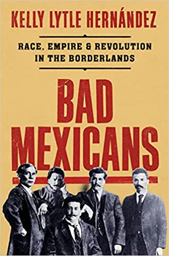

|

|
Bad Mexicans
by Kelly Lytle Hernández (Norton)
-
The term “bad Mexicans” (malos Mexicanos) was not coined by Anglos from the United States, instead it originated with President Porfirio Díaz, the authoritarian President of Mexico who ruled for almost three decades beginning in 1876. It was a derogatory name for any person or group who opposed him. At the expense of his own citizens and to the advantage of American investors, he encouraged and facilitated the investments to take place, which resulted in those American investors having control over major Mexican industries. Because of this situation, there developed a revolutionary movement, the magonistas, led by Ricardo Flores Magón, who established a political party, the Partido Liberal Mexicano, that challenged those corrupt practices and abuse of native Mexicans and their resources. Ricardo Flores Magón inspired and led groups of poor men and women, farmworkers, mine workers and other manual laborers, who had been forced to cross the border to the United States, seeking work because of being displaced from Mexico by the actions by President Díaz. The Partido Liberal Mexicano was a direct confrontation to the regime of Porfirio Díaz.
|